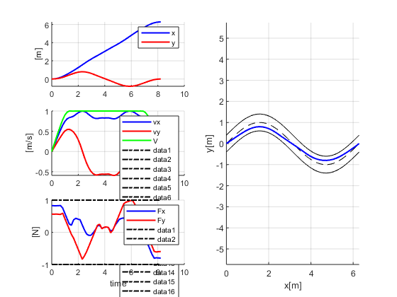
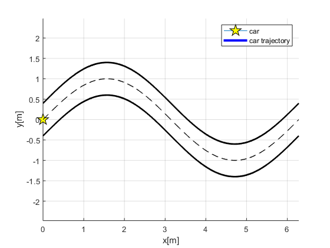
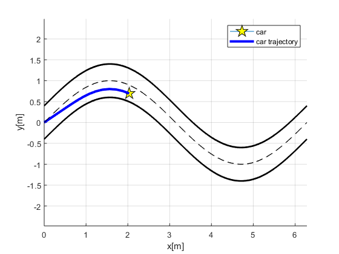
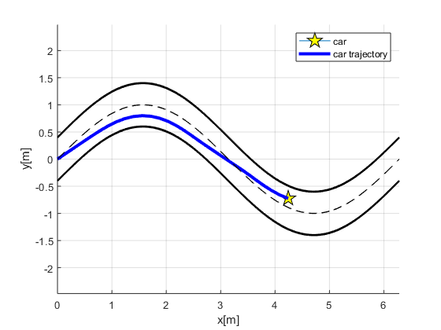
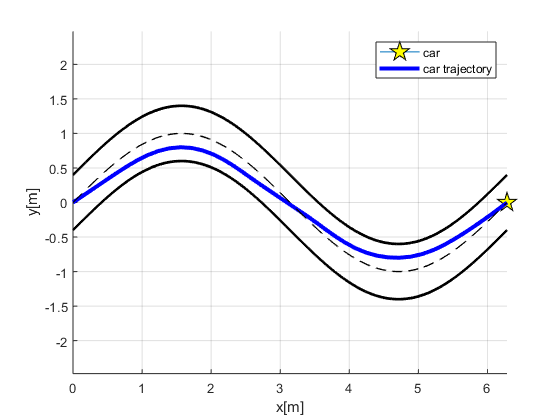

Contents
function [solution,times,solver] = racecar
MAX_TIME = 20;
solver = ocl.Solver([], @varsfun, @daefun, ...
'pointcosts', @pointcosts, 'pointconstraints', @pointconstraints, 'N', 50);
m = 1;
A = 1;
cd = 0.35;
rho = 1.23;
Vmax = 1;
Fmax = 1;
road_bound = 0.4;
solver.setParameter('m' , m);
solver.setParameter('A' , A);
solver.setParameter('cd' , cd);
solver.setParameter('rho' , rho);
solver.setParameter('Vmax', Vmax);
solver.setParameter('Fmax', Fmax);
solver.setParameter('road_bound', road_bound);
solver.setBounds('time', 0, MAX_TIME);
solver.setInitialBounds( 'x', 0.0);
solver.setInitialBounds('vx', 0.0);
solver.setInitialBounds( 'y', 0.0);
solver.setInitialBounds('vy', 0.0);
solver.setEndBounds( 'x', 2*pi);
solver.setEndBounds('vx', 0.0 );
solver.setEndBounds( 'y', 0.0 );
solver.setEndBounds('vy', 0.0 );
initialGuess = solver.getInitialGuess();
N = length(initialGuess.states.x.value);
x_road = linspace(0,2*pi,N);
y_center = sin(x_road);
initialGuess.states.x.set(x_road);
initialGuess.states.y.set(y_center);
[solution,times] = solver.solve(initialGuess);
figure('units','normalized')
subplot(3,2,1);hold on;grid on;
plot(times.states.value,solution.states.x.value,'Color','b','LineWidth',1.5);
plot(times.states.value,solution.states.y.value,'Color','r','LineWidth',1.5);
ylabel('[m]');legend({'x','y'});
subplot(3,2,3);hold on;grid on;
vx = solution.states.vx.value;
vy = solution.states.vy.value;
V = sqrt(vx.^2+vy.^2);
plot(times.states.value,vx,'Color','b','LineWidth',1.5);
plot(times.states.value,vy,'Color','r','LineWidth',1.5);
plot(times.states.value,V,'Color','g','LineWidth',1.5);
legend({'vx','vy','V'});
plot(times.states.value,Vmax.*ones(1,length(times)),'Color','k','LineWidth',1.5,'LineStyle','-.')
ylabel('[m/s]');
subplot(3,2,5);hold on;grid on;
plot(times.states.value,solution.states.Fx.value,'Color','b','LineWidth',1.5)
plot(times.states.value,solution.states.Fy.value,'Color','r','LineWidth',1.5)
legend({'Fx','Fy'});
plot(times.states.value,-Fmax.*ones(1,length(times.states.value)),'Color','k','LineWidth',1.5,'LineStyle','-.')
plot(times.states.value, Fmax.*ones(1,length(times.states.value)),'Color','k','LineWidth',1.5,'LineStyle','-.')
ylabel('[N]');xlabel('time');
subplot(3,2,[2,4,6]);hold on;grid on;
x_road = linspace(0,2*pi,1000);
y_center = sin(x_road);
y_max = y_center + road_bound;
y_min = y_center - road_bound;
plot(x_road,y_center,'Color','k','LineWidth',0.5,'LineStyle','--');
plot(x_road,y_min ,'Color','k','LineWidth',0.5,'LineStyle','-');
plot(x_road,y_max ,'Color','k','LineWidth',0.5,'LineStyle','-');
plot(solution.states.x.value,...
solution.states.y.value,'Color','b','LineWidth',1.5);
axis equal;xlabel('x[m]');ylabel('y[m]');
animate(times.states.value,solution,x_road,y_center,y_min,y_max)
end
function varsfun(sh)
sh.addState('x');
sh.addState('vx');
sh.addState('y');
sh.addState('vy');
sh.addState('Fx');
sh.addState('Fy');
sh.addState('time', 'lb', 0, 'ub', 20);
sh.addControl('dFx', 'lb', -1, 'ub', 1);
sh.addControl('dFy', 'lb', -1, 'ub', 1);
sh.addParameter('m');
sh.addParameter('A');
sh.addParameter('cd');
sh.addParameter('rho');
sh.addParameter('Vmax');
sh.addParameter('road_bound');
sh.addParameter('Fmax');
end
function daefun(sh,x,~,u,p)
sh.setODE( 'x', x.vx);
sh.setODE('vx', 1/p.m*x.Fx - 0.5*p.rho*p.cd*p.A*x.vx^2);
sh.setODE( 'y', x.vy);
sh.setODE('vy', 1/p.m*x.Fy - 0.5*p.rho*p.cd*p.A*x.vx^2);
sh.setODE('Fx', u.dFx);
sh.setODE('Fy', u.dFy);
sh.setODE('time', 1);
end
function pointcosts(ch,k,K,x,~)
if k==K
ch.add(x.time);
end
end
function pointconstraints(ch,~,~,x,p)
ch.add(x.vx^2+x.vy^2, '<=', p.Vmax^2);
ch.add(x.Fx^2+x.Fy^2, '<=', p.Fmax^2);
y_center = sin(x.x);
y_max = y_center + 0.5*p.road_bound;
y_min = y_center - 0.5*p.road_bound;
ch.add(x.y,'<=',y_max);
ch.add(x.y,'>=',y_min);
end
function animate(time,solution,x_road,y_center,y_min,y_max)
global testRun
isTestRun = testRun;
ts = time(2)-time(1);
x_car = solution.states.x.value;
y_car = solution.states.y.value;
Initialize animation
figure('units','normalized');hold on;grid on;
car = plot(x_car(1),y_car(1),'Marker','pentagram','MarkerEdgeColor','k','MarkerFaceColor','y','MarkerSize',15);
carLine = plot(x_car(1),y_car(1),'Color','b','LineWidth',3);
plot(x_road,y_center,'Color','k','LineWidth',1,'LineStyle','--');
plot(x_road,y_min ,'Color','k','LineWidth',2.0,'LineStyle','-');
plot(x_road,y_max ,'Color','k','LineWidth',2.0,'LineStyle','-');
legend('car','car trajectory');
axis equal;xlabel('x[m]');ylabel('y[m]');
pause(ts)
snap_at = floor(linspace(2,length(time),4));
 
for k = 2:1:length(time)
set(carLine, 'XData' , x_car(1:k));
set(carLine, 'YData' , y_car(1:k));
set(car , 'XData' , x_car(k));
set(car , 'YData' , y_car(k));
drawnow
if k == snap_at(1)
snapnow;
snap_at = snap_at(2:end);
end
if isempty(isTestRun) || (isTestRun==false)
pause(ts);
end
end
  
end
This is Ipopt version 3.12.3, running with linear solver mumps.
NOTE: Other linear solvers might be more efficient (see Ipopt documentation).
Number of nonzeros in equality constraint Jacobian...: 9997
Number of nonzeros in inequality constraint Jacobian.: 596
Number of nonzeros in Lagrangian Hessian.............: 2426
Total number of variables............................: 1899
variables with only lower bounds: 50
variables with lower and upper bounds: 301
variables with only upper bounds: 0
Total number of equality constraints.................: 1799
Total number of inequality constraints...............: 204
inequality constraints with only lower bounds: 0
inequality constraints with lower and upper bounds: 0
inequality constraints with only upper bounds: 204
iter objective inf_pr inf_du lg(mu) ||d|| lg(rg) alpha_du alpha_pr ls
0 9.9999900e-003 4.13e+000 1.98e-002 -1.0 0.00e+000 - 0.00e+000 0.00e+000 0
1 1.1095961e-002 4.09e+000 1.90e+002 -1.0 9.40e+001 - 1.04e-002 1.05e-002h 1
2 2.2181899e-002 4.08e+000 1.90e+002 -1.0 5.74e+001 - 9.94e-004 9.97e-004h 1
3 2.3223051e-002 4.08e+000 1.90e+002 -1.0 6.09e+001 - 1.25e-003 5.69e-005h 1
4 3.8798632e-002 4.08e+000 1.90e+002 -1.0 2.67e+001 - 8.78e-004 5.83e-004f 1
5 1.7171886e+000 3.84e+000 1.04e+003 -1.0 2.84e+001 - 3.26e-003 5.92e-002f 1
6 1.8567934e+000 3.69e+000 9.70e+002 -1.0 7.45e+000 - 2.19e-001 3.82e-002h 1
7 2.0510317e+000 3.51e+000 8.86e+002 -1.0 4.35e+000 - 1.88e-001 5.05e-002h 1
8 2.1500727e+000 3.41e+000 8.53e+002 -1.0 1.59e+001 - 2.22e-002 2.77e-002h 1
9 2.2128163e+000 3.35e+000 8.35e+002 -1.0 1.41e+001 - 1.55e-002 1.80e-002h 1
iter objective inf_pr inf_du lg(mu) ||d|| lg(rg) alpha_du alpha_pr ls
10 2.2272452e+000 3.33e+000 8.31e+002 -1.0 1.71e+001 - 1.25e-002 4.15e-003h 1
11 2.3193457e+000 3.25e+000 7.93e+002 -1.0 2.62e+001 - 7.96e-003 2.62e-002h 1
12 2.3908643e+000 3.18e+000 7.69e+002 -1.0 2.52e+001 - 6.96e-003 1.99e-002h 1
13 2.4217389e+000 3.16e+000 7.60e+002 -1.0 2.09e+001 - 6.88e-003 8.29e-003h 1
14 2.4634725e+000 3.12e+000 7.48e+002 -1.0 3.35e+001 - 1.70e-002 1.10e-002h 1
15 2.4787291e+000 3.11e+000 7.43e+002 -1.0 1.17e+002 - 4.64e-003 3.61e-003h 1
16 2.4884059e+000 3.10e+000 7.39e+002 -1.0 2.09e+002 - 1.06e-003 1.58e-003h 1
17 2.5274764e+000 3.09e+000 7.54e+002 -1.0 5.42e+001 - 1.44e-004 4.44e-003f 1
18 2.5284099e+000 3.09e+000 9.31e+002 -1.0 1.59e+002 - 6.46e-003 1.09e-004h 1
19 2.6025419e+000 3.06e+000 7.81e+002 -1.0 1.30e+002 - 3.40e-003 8.63e-003f 1
iter objective inf_pr inf_du lg(mu) ||d|| lg(rg) alpha_du alpha_pr ls
20 2.6959455e+000 3.03e+000 9.32e+002 -1.0 1.19e+002 - 1.63e-002 1.13e-002f 1
21 2.6972591e+000 3.03e+000 1.02e+003 -1.0 4.86e+001 - 3.49e-003 1.66e-004h 1
22 2.7108552e+000 3.02e+000 1.03e+003 -1.0 2.56e+002 - 1.99e-003 1.71e-003f 1
23 2.7410153e+000 3.01e+000 9.74e+002 -1.0 1.95e+002 - 1.06e-003 3.81e-003h 1
24 2.7765682e+000 3.00e+000 1.41e+003 -1.0 6.55e+001 - 1.67e-002 4.57e-003f 1
25 2.7772482e+000 3.00e+000 1.42e+003 -1.0 1.22e+002 - 2.37e-004 9.17e-005h 1
26 2.7801263e+000 3.00e+000 1.80e+003 -1.0 4.55e+002 - 1.70e-003 3.89e-004f 1
27 2.7828227e+000 3.00e+000 1.92e+003 -1.0 3.78e+002 - 5.42e-004 3.69e-004h 1
28 2.8084915e+000 2.99e+000 1.42e+003 -1.0 4.17e+002 - 1.08e-003 3.47e-003f 1
29 2.9070789e+000 2.95e+000 1.19e+003 -1.0 6.34e+001 - 1.38e-004 1.26e-002f 1
iter objective inf_pr inf_du lg(mu) ||d|| lg(rg) alpha_du alpha_pr ls
30 2.9535037e+000 2.93e+000 1.37e+003 -1.0 5.82e+001 - 1.33e-002 6.24e-003f 1
31 3.1171873e+000 2.86e+000 7.83e+002 -1.0 8.76e+001 - 6.57e-004 2.23e-002f 1
32 3.1355144e+000 2.86e+000 8.59e+002 -1.0 2.62e+001 - 7.17e-003 2.77e-003h 1
33 3.2956813e+000 2.79e+000 7.11e+002 -1.0 5.33e+001 - 1.02e-002 2.44e-002f 1
34 3.2989717e+000 2.78e+000 1.70e+003 -1.0 8.91e+001 - 1.28e-002 5.59e-004h 1
35 3.3650215e+000 2.75e+000 8.58e+002 -1.0 4.01e+001 - 1.51e-004 1.08e-002f 1
36 3.4510399e+000 2.72e+000 8.48e+002 -1.0 1.33e+001 - 1.40e-003 1.42e-002f 1
37 3.6988422e+000 2.60e+000 8.12e+002 -1.0 4.52e+001 - 2.70e-002 4.26e-002f 1
38 3.8153783e+000 2.54e+000 7.93e+002 -1.0 9.96e+000 - 1.97e-002 2.33e-002h 1
39 4.0270865e+000 2.43e+000 7.58e+002 -1.0 1.83e+001 - 6.30e-002 4.50e-002f 1
iter objective inf_pr inf_du lg(mu) ||d|| lg(rg) alpha_du alpha_pr ls
40 4.0428452e+000 2.42e+000 7.55e+002 -1.0 1.17e+001 - 1.44e-002 3.78e-003h 1
41 4.4825944e+000 2.17e+000 6.77e+002 -1.0 8.47e+000 - 4.76e-003 1.03e-001f 1
42 4.5852493e+000 2.10e+000 6.57e+002 -1.0 9.39e+000 - 5.90e-002 2.96e-002f 1
43 4.9492356e+000 1.88e+000 5.87e+002 -1.0 1.54e+001 - 4.78e-002 1.07e-001f 1
44 5.2909014e+000 1.65e+000 5.17e+002 -1.0 6.19e+000 - 8.88e-002 1.19e-001f 1
45 5.4470919e+000 1.55e+000 4.85e+002 -1.0 5.26e+000 - 9.10e-002 6.05e-002f 1
46 5.6778956e+000 1.43e+000 4.45e+002 -1.0 4.95e+000 - 2.63e-002 8.08e-002f 1
47 6.0481358e+000 1.25e+000 4.11e+002 -1.0 8.16e+000 - 3.06e-002 1.24e-001f 1
48 6.5115545e+000 1.04e+000 4.61e+002 -1.0 5.24e+000 - 8.59e-002 1.71e-001f 1
49 6.7829958e+000 9.47e-001 4.21e+002 -1.0 3.09e+000 - 1.20e-001 8.79e-002f 1
iter objective inf_pr inf_du lg(mu) ||d|| lg(rg) alpha_du alpha_pr ls
50 7.0970837e+000 9.28e-001 4.18e+002 -1.0 2.62e+001 - 8.24e-003 2.06e-002f 1
51 7.4523943e+000 6.01e-001 2.70e+002 -1.0 1.01e+000 0.0 2.86e-001 3.52e-001h 1
52 8.3174791e+000 3.73e-001 1.74e+002 -1.0 2.29e+000 - 1.98e-001 3.79e-001f 1
53 9.0165111e+000 1.49e-002 2.28e+001 -1.0 7.28e-001 -0.5 6.68e-001 9.60e-001f 1
54 9.5476458e+000 5.34e-003 3.19e+001 -1.0 5.31e-001 - 4.62e-001 1.00e+000f 1
55 1.0834337e+001 9.39e-003 8.43e+000 -1.0 1.29e+000 - 5.68e-001 1.00e+000f 1
56 1.3563178e+001 1.96e-002 4.47e+000 -1.0 2.73e+000 - 4.08e-001 1.00e+000f 1
57 1.4210622e+001 1.76e-003 1.53e+000 -1.0 6.47e-001 - 4.18e-001 1.00e+000h 1
58 1.4490859e+001 8.40e-004 1.71e-001 -1.0 6.74e-001 - 7.22e-001 1.00e+000h 1
59 1.2348648e+001 4.41e-003 1.62e-001 -2.5 2.14e+000 - 7.32e-001 1.00e+000f 1
iter objective inf_pr inf_du lg(mu) ||d|| lg(rg) alpha_du alpha_pr ls
60 8.7190405e+000 1.74e-002 4.57e-002 -2.5 4.15e+000 - 8.27e-001 8.74e-001f 1
61 8.4057470e+000 2.75e-002 7.38e-002 -2.5 3.69e-001 - 1.00e+000 8.67e-001h 1
62 8.4793711e+000 7.53e-004 8.70e-003 -2.5 4.34e-001 - 1.00e+000 1.00e+000h 1
63 8.3211695e+000 8.01e-004 1.50e-002 -3.8 4.18e-001 - 7.02e-001 6.54e-001h 1
64 8.2636345e+000 3.02e-003 3.83e-003 -3.8 8.13e-001 - 6.72e-001 6.99e-001h 1
65 8.2472907e+000 1.62e-003 5.24e-002 -3.8 4.80e-001 - 8.11e-001 6.25e-001h 1
66 8.2369227e+000 8.31e-005 7.74e-004 -3.8 4.01e-001 - 1.00e+000 1.00e+000h 1
67 8.2372429e+000 3.08e-007 4.49e-005 -3.8 4.82e-002 - 1.00e+000 1.00e+000h 1
68 8.2273701e+000 3.92e-005 5.83e-003 -5.7 2.83e-001 - 7.68e-001 7.10e-001h 1
69 8.2257023e+000 2.41e-005 1.08e-001 -5.7 2.59e-001 - 7.19e-001 4.39e-001h 1
iter objective inf_pr inf_du lg(mu) ||d|| lg(rg) alpha_du alpha_pr ls
70 8.2245303e+000 1.19e-005 4.70e-002 -5.7 3.36e-001 - 5.51e-001 5.58e-001h 1
71 8.2238142e+000 5.31e-006 1.24e-002 -5.7 2.86e-001 - 8.76e-001 8.16e-001h 1
72 8.2236579e+000 5.95e-007 2.45e-004 -5.7 1.91e-001 - 9.81e-001 1.00e+000f 1
73 8.2236572e+000 6.59e-010 4.74e-006 -5.7 3.09e-002 - 1.00e+000 1.00e+000h 1
74 8.2235063e+000 3.64e-007 4.49e-003 -8.6 1.30e-001 - 7.15e-001 9.38e-001h 1
75 8.2234961e+000 3.83e-008 2.88e-004 -8.6 9.46e-002 - 9.38e-001 9.31e-001h 1
76 8.2234954e+000 3.54e-008 1.30e-007 -8.6 6.11e-002 - 1.00e+000 1.00e+000h 1
77 8.2234954e+000 7.65e-011 8.93e-009 -8.6 1.29e-002 - 1.00e+000 1.00e+000h 1
Number of Iterations....: 77
(scaled) (unscaled)
Objective...............: 8.2234953719382684e+000 8.2234953719382684e+000
Dual infeasibility......: 8.9315200121552894e-009 8.9315200121552894e-009
Constraint violation....: 7.6451121475140660e-011 7.6451121475140660e-011
Complementarity.........: 4.3208364717157619e-009 4.3208364717157619e-009
Overall NLP error.......: 8.9315200121552894e-009 8.9315200121552894e-009
Number of objective function evaluations = 78
Number of objective gradient evaluations = 78
Number of equality constraint evaluations = 78
Number of inequality constraint evaluations = 78
Number of equality constraint Jacobian evaluations = 78
Number of inequality constraint Jacobian evaluations = 78
Number of Lagrangian Hessian evaluations = 77
Total CPU secs in IPOPT (w/o function evaluations) = 0.798
Total CPU secs in NLP function evaluations = 0.020
EXIT: Optimal Solution Found.
t_proc [s] t_wall [s] n_eval
my_solver 0.818 0.818 1
nlp_f 0 0 78
nlp_g 0.015 0.0156 78
nlp_grad_f 0 0 79
nlp_hess_l 0.003 0.00307 77
nlp_jac_g 0.002 0.00209 79
ans =
OclAssignment with content:
{
Variable:
Size: [1914 1]
Type: OclStructure
Children: states, integrator, controls, parameters, h
Value: [0;0;0;0;0.827296;0.561767;0;0.000268724;0.0210929;0.000182455;0.0143297;0.827037;0.562146;0.0255011;0.00465085;0.0876391;0.003162;0.059614;0.826221;0.563345;0.106074;0.0111727;0.13571;0.00759997;0.09...
}